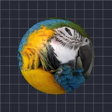

স্ফেরাইজ

ফ্রন্ট প্রজেকশন বা ইকুইরেক্ট্যাঙ্গুলার টেক্সচার দিয়ে লেয়ারকে একটি গোলকের ওপর জড়ায়।
সেটিংস
| সেটিং | ধরন | রেঞ্জ | ডিফল্ট |
|---|---|---|---|
| রোটেশন X | কোণ | -3600° থেকে 3600° | 0° |
| রোটেশন Y | কোণ | -3600° থেকে 3600° | 0° |
| রোটেশন Z | কোণ | -3600° থেকে 3600° | 0° |
| রেডিয়াস | সংখ্যা | 0.02 থেকে 5 | 0.9 |
| কভারেজ | সংখ্যা | 0.2 থেকে 1 | 0.5 |
| প্রজেকশন | পছন্দ | ফ্রন্ট, ইকুইরেক্ট্যাঙ্গুলার | ফ্রন্ট |
| পজিশন | পয়েন্ট (X, Y) | -5000 px থেকে 5000 px | 0 px, 0 px |
| স্কেল | সংখ্যা | 0.05 থেকে 10 | 1 |
| পার্সপেক্টিভ | সংখ্যা | 0 থেকে 1 | 0.5 |
| শেডিং | সংখ্যা | 0 থেকে 1 | 0.6 |
| লাইট অ্যাঙ্গেল | কোণ | -3600° থেকে 3600° | 135° |
| শাইন | সংখ্যা | 0 থেকে 1 | 0.3 |